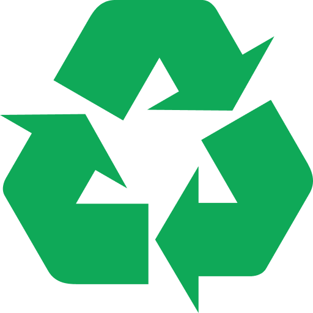

.png)


.
.

Consumo Consciente
O Consumo Consciente envolve a escolha de produtos que utilizaram menos recursos naturais em sua produção, que garantiram o emprego decente aos que os produziram, e que serão facilmente reaproveitados ou reciclados. Significa comprar aquilo que é realmente necessário, estendendo a vida útil dos produtos tanto quanto possível.
Principais Práticas do Consumo Consciente:
-

- Diminuir o Desperdício de Água;
- Minimizar A Poluição Aquática E Do Solo;
- Favorecer A Reciclagem De Materiais;
- Dar Preferência A Alimentos Verdes;
- Economia De Energia Elétrica;
- Apostar Na Compostagem;
Como colocar o consumo consciente em prática:
- Fechar a torneira enquanto ensaboa a louça;
- Fechar o chuveiro enquanto ensaboa o corpo;
- Apagar a luz ao sair de um cômodo;
- No mercado, escolher embalagens biodegradáveis;
- Reutilizar a água da máquina de lavar para limpar a casa;
- Preferir eletrodomésticos que gastam menos energia;
- Evitar abrir a geladeira muitas vezes ao dia;
- Imprimir apenas o que for necessário;
- Usar frente e verso das folhas de papel;
- Reduzir o uso do carro, preferindo meios de transporte que não usam combustíveis fósseis, como a bicicleta.